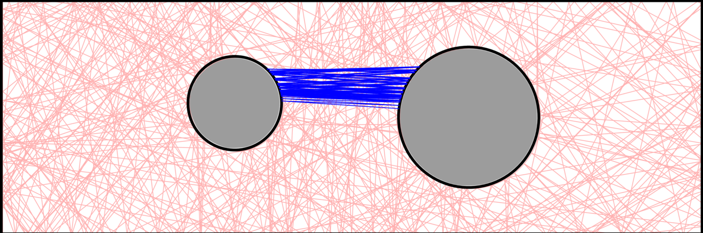

Rolling systems and nonholonomic billiards

A sphere rolling on a surface (or other manifold, like the ray to the right) without sliding is an example of a nonholonomic system. While no-slip billiards are modeled without any explicit nonholonomic constraints, in Differential geometry of rigid bodies collisions and non-standard billiards (with Renato Feres ) we show that (at least in spirit) there is a certain affinity, as the natural physical assumptions on the collision map will ensure that it restricts to the identity on a certain non-slipping subspace. This idea was made more concrete in Rolling and no-slip bouncing in cylinders, with Feres, Scott Cook, and Tim Chumley, in which we show that small no-slip collisions very closely approximate the nonholonomic motion of a sphere rolling in a cylinder under an external force. Independently, Borisov, Kilin, and Mamaev partially bridged the no-slip/nonholonomic gap from the other side, showing that the two dimensional no-slip strip and ellipse emerge as limits of rolling systems respectively in an infinite cylinder and an ellipsoid. In Rolling systems and their billiard limits with Feres and Bowei Zhao, we extend this connection, showing that no-slip limits arise very generally as the small radius limit of nonholonomic rolling systems. Currently, we are interested in the dynamics of rolling systems; in particular, which distinctive features of no-slip billiards persist for positive radius rolling systems?
The no-slip Galton board
 Lorentz gases, modeled by billiard systems with an array of scatterers, were introduced as a model for ions moving in a metal over a hundred years ago, and the broadly applicable model is still actively studied. The ideal Galton Board, essentially a Lorentz gas with an external force, modeling a bean machine in which particles fall dispersed by scatterers, is also of mathematical interest. Neither of these models has been previously considered in the context of the no-slip collision model; indeed, as invariant regions preclude the ergodicity of standard Sinai billiard (see blue trajectories, left) analytic study becomes difficult. However, many questions can still be broached numerically, and in the Summer of 2019 Scott Cook and I led a team of undergraduates working at Tarleton State University developing python code to run simulations of no-slip billiards under an external force. Working with Tim Chumley, we are currently preparing the results from these experiments.
Recent Projects
Dynamics of no-slip billiards
 In my dissertation and in No-slip billiards in dimension two with Renato Feres, we begin to analyze the dynamics of billiards using the no-slip collision model. One characteristic of polygonal no-slip billiards, as seen for the phase portrait projection of the pentagon to the left, is the ubiquity of periodic point centering invariant regions, a generalization of the elliptic islands of standard ergodic billiards. These preclude ergodicity in polygons, as Feres and I showed with Hongkun Zhang at the University of Massachusetts Amherst, in Stability of periodic orbits in no-slip billiards.
In my dissertation and in No-slip billiards in dimension two with Renato Feres, we begin to analyze the dynamics of billiards using the no-slip collision model. One characteristic of polygonal no-slip billiards, as seen for the phase portrait projection of the pentagon to the left, is the ubiquity of periodic point centering invariant regions, a generalization of the elliptic islands of standard ergodic billiards. These preclude ergodicity in polygons, as Feres and I showed with Hongkun Zhang at the University of Massachusetts Amherst, in Stability of periodic orbits in no-slip billiards.
Ergodic billiards
 Standard specular billiards having boundaries formed by two arcs of circles may form flowers of two petals (if the internal angle is greater than pi), lemon billiards (if both edges bulge outward and meet at an angle less than pi), or moon billiards (if one side bulges in, forming a crescent moon shape). The first category are known to be ergodic by a criteria of Bunimovich. The latter two classes were studief by Hongkun Zhang and Maria Coriea (also of UMass Amherst). Hongkun and Maria let me work with them on a perturbation of these types known as umbrella billiards .
Standard specular billiards having boundaries formed by two arcs of circles may form flowers of two petals (if the internal angle is greater than pi), lemon billiards (if both edges bulge outward and meet at an angle less than pi), or moon billiards (if one side bulges in, forming a crescent moon shape). The first category are known to be ergodic by a criteria of Bunimovich. The latter two classes were studief by Hongkun Zhang and Maria Coriea (also of UMass Amherst). Hongkun and Maria let me work with them on a perturbation of these types known as umbrella billiards .
{kind=link}
{kind=link}